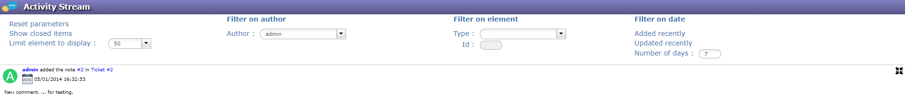

Activity Stream¶
This screen is devoted to display notes.
To default you will see all visible notes for each items.
There are filters to refine the search.

Note
- Click on
 to hide note comment.
to hide note comment. - Click on
 to display note comment.
to display note comment.
Chat¶
Display of notes on right part of screen.
The chat displays notes on the selected item.
Possibility to quickly add note, write your text and press ‘Enter’ key.
You can change the visibility of the note if you click on the bottom right corner.
- Click on to hide or display the chat.